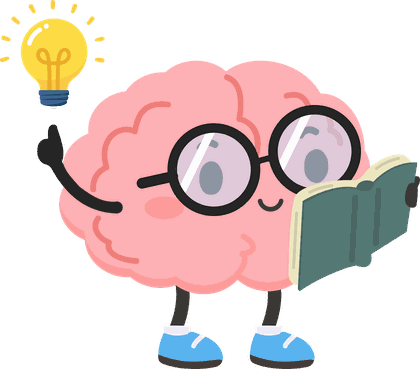

Plenary · Mapúa University1 Oct 2026
 Your turn
Your turn
Instructional Design Using AI

Five short activities from today's session. Open each one when Lea shows its slide, or come back to them later. Nothing you type leaves your phone.
-
Stop 1 · Conditions for learning
One lesson, nine events
Click through a real web design lesson built on Gagné's nine events: hook, practice, instant feedback, and more.
Open the lesson → -
Stop 2 · Engagement
Engaged, or just busy?
Sort eight classroom moments, then pick the evidence that proves a strategy worked.
Play → -
Stop 3 · Alignment
Spot the break
Eight real-looking course snippets. Is it aligned, or did it quietly break?
Play → -
 Stop 4 · Challenge Based Learning
Stop 4 · Challenge Based Learning
Challenge builder
Big idea, essential question, challenge, evidence. Build one for your own class and save it as a card.
Build → -
Last stop · Before we go
The Educator's Pledge
Add your name and a photo, and take home your pledge as an image.
Make my card →
Instructional Design Using AILea Abarentos